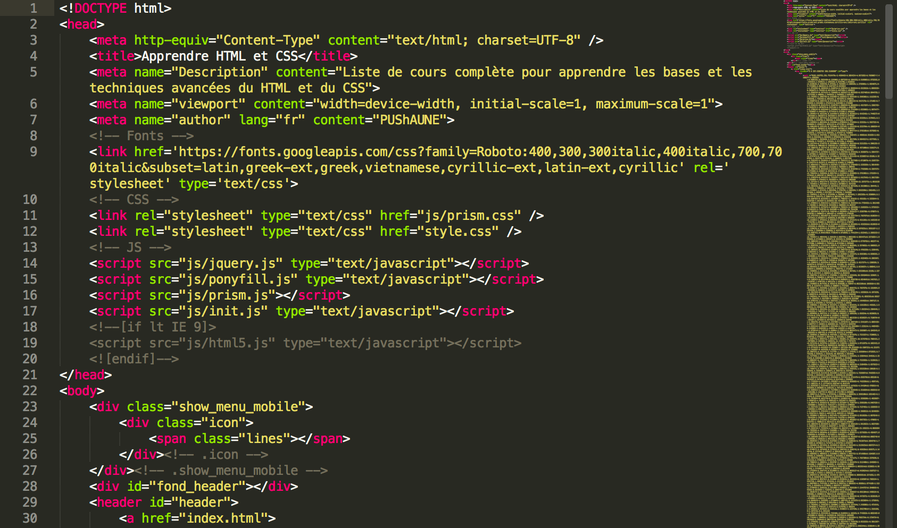

Maguette sow
Bonjour à tous,
Je suis ravi de me présenter en tant que développeuse web expérimentée. Avec plusieurs années d'expérience dans le domaine du développement front-end, je suis passionnée par la création d'interfaces utilisateur attrayantes et fonctionnelles.
En tant que développeuse front-end, mon rôle principal est de traduire les conceptions graphiques en code utilisable. Je suis compétente dans les langages de programmation tels que HTML, CSS et JavaScript, ainsi que dans l'utilisation de frameworks populaires tels que Laravel et Boostrap.
Mon expertise réside dans la création de sites web réactifs et conviviaux, qui offrent une expérience utilisateur exceptionnelle sur tous les appareils. Je suis également compétent dans l'optimisation des performances des sites web, en veillant à ce qu'ils se chargent rapidement et fonctionnent de manière fluide.
En plus de mes compétences techniques, je suis également un communicatrice efficace et un bon collaboratrice. Je suis capable de travailler en équipe avec des designers, des développeurs back-end et d'autres parties impliquées pour créer des produits de haute qualité.
En tant que développeuse web, je suis constamment à l'affût des dernières tendances et technologies du secteur. Je suis toujours prêt à apprendre de nouvelles choses et à m'adapter rapidement aux évolutions du domaine.
Voici un exemple de code HTML simple pour vous donner une idée de mon travail
J'espère que cette brève présentation vous a donné un aperçu de mon profil en tant que
développeur web. Si vous avez d'autres questions ou si vous souhaitez discuter de projets
potentiels, n'hésitez pas à me contacter. Je serais ravi de vous aider dans vos projets de développement front-end.